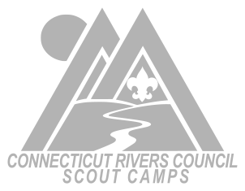
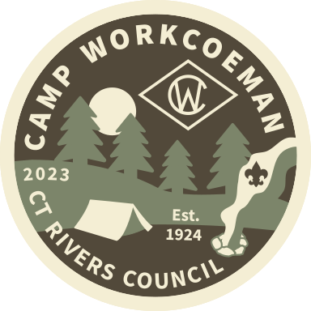

Camp Workcoeman is used year-round for short-term camping for all Scouting Cub Packs, Scout Troops, and Venture Crews, as well as for district and Order of the Arrow activities. Camp staff and volunteers run a variety of year-round programs for Scouts on both an individual and unit basis.
During the six week summer camp season, Scouts enjoy unforgettable Scouting experiences. Currently, the summer camp season consists of four weeks of short-term daytime Scouts BSA opportunities and two weeks of Cub Scout Day Camp. Overnight unit and family camping is also available, as well as a variety of à la carte opportunities for units.

News & Events
{% for post in site.posts limit: 3 %}
{% endfor %}
More news »
{{ post.title }} {{ post.date | date_to_string }}
{{ post.content | markdownify }}Why should your troop attend summer camp at Camp Workcoeman?
- Visit the Why Workcoeman? page for an immersive guide to why your troop should attend Camp Workcoeman.
-
A Quality Program
A flexible program, tailored to the needs of your troop from the new Scout to the veterans. -
A Dedicated Staff
A Camp Director with {% lou_years %} years experience and a trained, high quality staff that return every year. Flexibility, caring, and dedication are the essential qualities that make up the Camp Workcoeman Staff. -
A Consistent Philosophy
You want the best summer program, and the staff is here to deliver the finest program available to your Scouts!